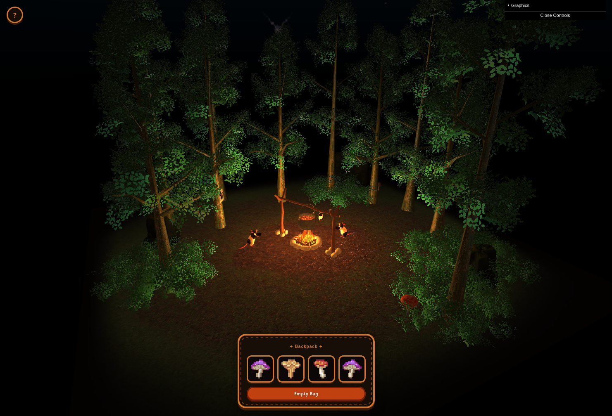
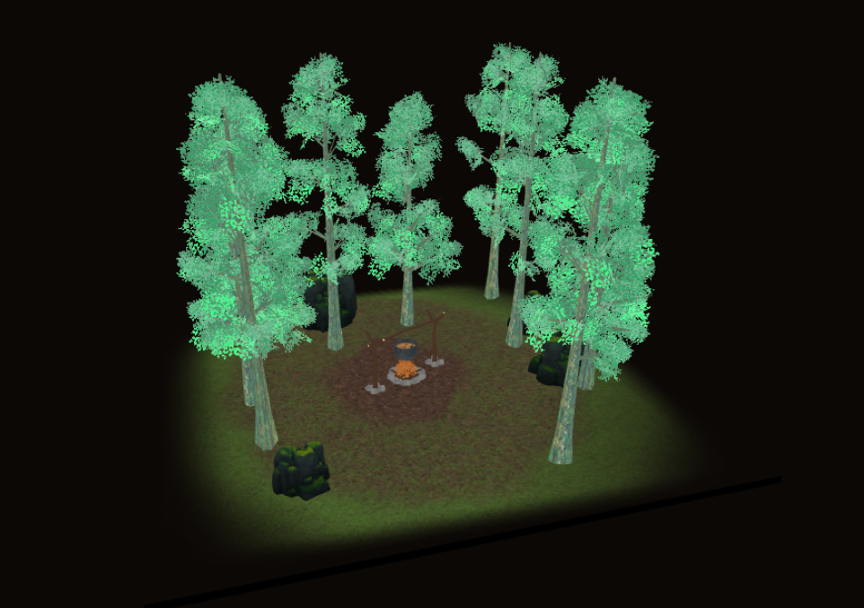
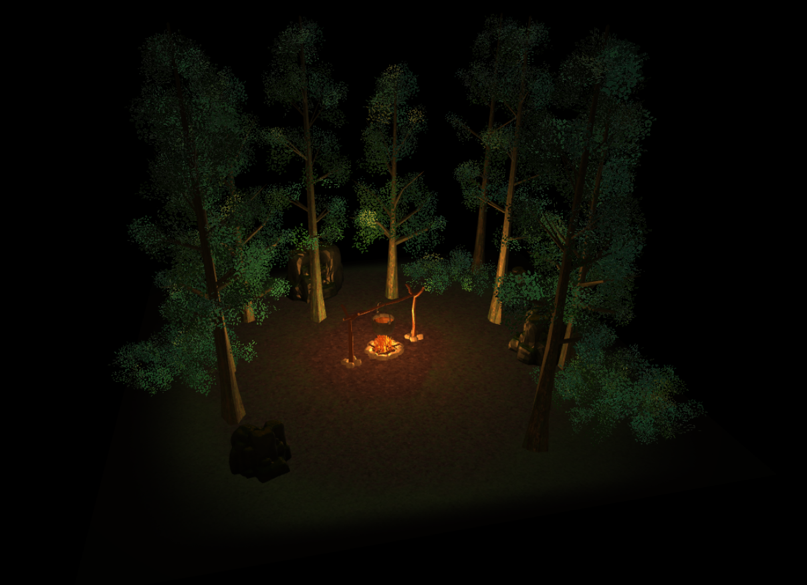
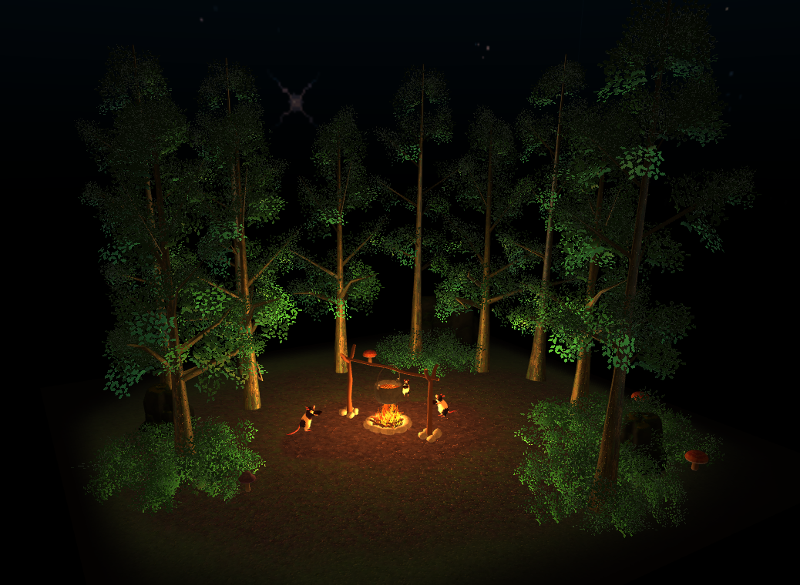

Scena 3D interattiva sviluppata in WebGL 2.0
"Soup in the Woods" è un'applicazione interattiva 3D sviluppata interamente in WebGL 2.0. La scena raffigura una foresta notturna illuminata da un fuoco da campeggio, in cui l'utente può esplorare l'ambiente, raccogliere dei funghi ed utilizzarli per servire della zuppa a dei topolini disposti intorno al fuoco.

Per realizzare la scena, dapprima ideata e progettata in Blender, è stato necessario gestire in maniera
efficiente molte istanze dello stesso modello: alberi, cespugli e funghi sono presenti in decine di copie
con posizioni diverse, e disegnarli con draw call separate avrebbe comportato un overhead eccessivo.
Si è quindi scelto di usare l'instanced rendering di WebGL 2.0 (gl.drawArraysInstanced), che
permette di inviare alla GPU un unico VAO con una matrice di trasformazione per ogni istanza, riducendo le
draw call a una per ogni materiale indipendentemente dal numero di istanze [1].
Inoltre, per ottenere un'illuminazione realistica del fuoco (luce puntiforme), è stata implementata una tecnica di attenuazione
quadratica [2] ed un termine di diffuse modificato (wrapped Lambert) che ammorbidisce le ombre e simula
l'effetto di subsurface scattering tipica della luce del fuoco aggiungendo un parametro wrap per distribuire il contributo diffusivo
anche sulle superfici parzialmente in ombra [3][4]. Questa tecnica, seppur approssimativa,
ha permesso di ottenere un risultato visivamente più realistico, in combinazione con l'animazione del crepitio delle fiamme e con la variazione
dell'intensità luminosa.
Il modello di illuminazione Phong è stato esteso con un secondo contributo diffusivo e speculare per la luce direzionale della luna, che illumina la scena in modo più uniforme e freddo, creando un contrasto con il calore del fuoco. Per aumentare ulteriormente il realismo dei materiali, sono state utilizzate texture diffuse, specular map e bump map, che permettono di simulare dettagli superficiali senza aumentare la complessità geometrica. Per il rendering delle foglie degli alberi e dei cespugli, invece, sono state utilizzate delle geometrie piatte con texture trasparenti, disegnate con blending (alpha clipping) e senza culling delle facce, per garantire la visibilità da entrambi i lati.
L'interazione utente è gestita tramite un sistema di ray casting che permette di selezionare i funghi con il mouse (o tramite touch) e raccoglierli in un inventario, da cui possono essere poi serviti ai topolini. Il ray casting è implementato calcolando l'intersezione tra il raggio generato dalla posizione del click, costruito direttamente a partire dai vettori locali della camera, e le bounding sphere di ogni istanza interattiva [6][7].
Il minigioco consiste quindi nel raccogliere i funghi che crescono casualmente nella foresta e servirli ai topolini, che reagiscono con animazioni di bounce (approvazione), nod (indifferenza) e shake (rifiuto). Diverse combinazioni di funghi portano a risultati diversi, e il giocatore è invitato a sperimentare per scoprire tutte le reazioni dei topolini.
Il progetto è strutturato in moduli JavaScript con responsabilità ben distinte:
index.html <!-- interfaccia e definizione shader --> js/ main.js <!-- loop di rendering e gestione input utente --> scene.js <!-- contesto WebGL, programmi shader, render --> forest.js <!-- scena 3D: modelli, funghi, animazioni --> camera.js <!-- camera orbitale in coordinate sferiche --> light.js <!-- sorgenti luminose (fuoco, luna) --> game.js <!-- logica di gioco, ray casting, inventario --> utilities.js <!-- caricamento OBJ/MTL, texture, VAO, geometria --> ui.js <!-- interfaccia utente con inventario e dat.GUI --> assets/ models/ <!-- file .obj e .mtl --> textures/ <!-- diffuse, bump, specular, skybox --> lib/ <!-- librerie esterne (gl-matrix, m4, dat.GUI) -->
L'inizializzazione è asincrona e gestita in main.js. La funzione
main() è un IIFE (Immediately Invoked Function Expression) dichiarata
async. Crea prima la Camera e poi la Scene, che a
sua volta istanzia la Forest e attende il caricamento di tutti i modelli 3D
prima di avviare il loop. Solo dopo che scene.init() si risolve vengono creati
UI e Game, e si avvia il loop con requestAnimationFrame.
Ad ogni frame vengono calcolate la matrice di proiezione prospettica (FOV 60°, near 0.1, far 200) e la view matrix dalla camera. La sequenza di rendering è: pulizia del framebuffer, disegno della skybox, poi tutti gli oggetti della scena con il programma shader principale.
Ogni oggetto non ha una model matrix come uniform: la trasformazione individuale è un attributo
per istanza (a_instanceMatrix, location 2–5) letto dal buffer dedicato. Poiché una
mat4 non può essere passata come singolo attributo GLSL, viene suddivisa in quattro
vec4 consecutivi; per ciascuno si chiama gl.vertexAttribDivisor(loc, 1),
che istruisce la GPU ad avanzare di una matrice per istanza anziché per vertice [1].
Per gli oggetti con animazioni dinamiche (funghi, fuoco, topi), le instance matrix vengono
aggiornate ogni frame tramite gl.bufferSubData(), sovrascrivendo solo i dati
necessari senza ricreare i VAO [2].
Ogni modello è suddiviso in renderable, uno per materiale, poiché WebGL richiede una draw call separata per ogni combinazione di VAO e texture. La draw call finale è:
gl.drawArraysInstanced(gl.TRIANGLES, 0, vertexCount, instanceCount)
meshToGeometry() converte la struttura interna della mesh OBJ in quattro
Float32Array piatti: posizioni, UV, normali e tangenti. I file OBJ sono stati
esportati da Blender con l'opzione Triangulate Mesh, garantendo che ogni faccia
abbia esattamente 3 vertici ed eliminando la necessità di triangolazione a runtime.
Per ogni triangolo viene calcolata la tangente algebrica necessaria per il bump mapping.
La skybox è disegnata con un quad di 4 vertici in NDC (TRIANGLE_STRIP). Il
vertex shader imposta gl_Position = vec4(xy, 1, 1), posizionando ogni frammento
alla profondità massima del frustum; il depth test viene impostato a LEQUAL
per evitare che la skybox sovrascriva oggetti già disegnati. Il fragment shader ricostruisce
la direzione di campionamento moltiplicando le coordinate NDC per
u_viewDirectionProjectionInverse e applicando uno smoothstep
all'orizzonte per simulare una sfumatura graduale verso il nero ed evitare che le stelle appaiano a ridosso del terreno.
Fin dall'inizializzazione, il blending è abilitato con la formula standard
SRC_ALPHA, ONE_MINUS_SRC_ALPHA per gestire la trasparenza. Il culling
delle facce è disabilitato (gl.disable(CULL_FACE)) per rendere correttamente
le foglie degli alberi, che sono geometrie piatte visibili da entrambi i lati.
Il risultato senza illuminazione iniziale è:

Il modello Lambertiano standard calcola il contributo diffusivo come max(N·L, 0), producendo una
distinzione netta tra luce e ombra, con superfici completamente nere sul lato non illuminato.
Per simulare la luce diffusa di un fuoco in un ambiente notturno, si adotta un'approssimazione del modello Wrapped Lambert
[3][4]:
Il parametro wrap ∈ [0, 1] controlla quanta luce "avvolge" le superfici in ombra: per wrap = 0 si riduce al Lambertiano classico; per wrap = 1 la luce raggiunge anche le superfici completamente in ombra. Questa formulazione può essere interpretata come un'interpolazione lineare tra illuminazione costante e Lambertiano standard, ed è un'approssimazione pratica dello scattering della luce nell'aria circostante [4].
L'attenuazione della luce puntiforme segue una legge quadratica [2]:
brightness = intensity / (kc + k1 * dist + kq * dist²)
Con kc = 1, k1 = 0, kq = 0.08. La componente speculare usa il modello Blinn-Phong con vettore halfway
H = normalize(L + V).
La luna è una luce direzionale con intensità fissa 0.3 e colore blu-grigio freddo,
usata come termine ambientale notturno. Contribuisce sia al diffuse che allo speculare.
Se è abilitata una specular map (u_useSpecularMap), il campione della texture
moltiplica il contributo speculare, modulando la lucentezza per area di superficie.
Con l'illuminazione completa, il risultato è:

È il modulo più denso del progetto: contiene tutte le funzioni di caricamento asincrono, conversione della geometria e setup dei buffer GPU.
loadOBJModel() è la funzione principale di caricamento: legge il file OBJ
tramite la libreria mesh_utils.js, poi il file MTL associato, e costruisce
per ogni materiale un oggetto renderable contenente geometria, texture e proprietà
del materiale.
meshToGeometry() converte la struttura interna della mesh OBJ in array piatti
(Float32Array) pronti per la GPU.
Per ogni triangolo calcola anche la tangente nel tangent space, necessaria per il bump
mapping: la tangente è ricavata algebricamente dagli edge del triangolo e dalle differenze
UV, risolvendo il sistema [T, B] = [e1, e2] * inv([dU, dV]).
loadTexture() gestisce il caricamento asincrono delle texture con una cache
globale (Map) che evita di ricaricare la stessa immagine più volte. Crea
immediatamente una texture placeholder bianca 1×1 poi sostituisce i dati una volta che
l'immagine è caricata. Se le dimensioni sono potenza di 2, genera automaticamente i mipmap con
generateMipmap(); altrimenti imposta il wrapping a CLAMP_TO_EDGE
e il filtro a LINEAR.
loadCubemap() carica la cubemap della skybox: la stessa immagine è usata
per tutte e sei le facce, dato che in questo progetto l'immagine del cielo è simmetrica.
computeBoundingSphere() calcola la bounding sphere di una mesh iterando su
tutti i vertici e trovando il bounding box axis-aligned; il centro è il punto medio del
bounding box e il raggio è la metà della dimensione massima tra i tre assi. Questa
approssimazione è usata per il ray casting dei funghi e del focolare [8].
raySphereIntersect() implementa il test raggio-sfera analitico: dati origine
e direzione del raggio e la sfera in world space (centro trasformato dalla model matrix,
raggio scalato dalla norma della prima colonna della matrice), risolve l'equazione quadratica
e restituisce true se il discriminante è non negativo [6][7].
Scene è la classe centrale dell'applicazione. Il costruttore ottiene il
contesto WebGL 2 dal canvas e inizializza a null tutte le risorse GPU (program, VAO,
uniform locations). Il metodo init() è asincrono: compila i due programmi
shader tramite webglUtils.createProgramFromScripts(), legge le location
di tutti gli attributi e delle uniform una sola volta (per evitare lookup ad ogni frame)
e delega alla Forest il caricamento dei modelli.
Il metodo render() è chiamato ad ogni frame. Calcola le matrici, disegna
prima la skybox con il suo programma dedicato, poi reimposta il depth function e
attiva il programma principale. Prima di delegare il rendering alla foresta, imposta
le uniform delle sorgenti luminose: posizione, colore e intensità del fuoco, direzione
e colore della luna, posizione della camera (necessaria per i calcoli speculari).
Espone anche metodi di toggle che fungono da interfaccia tra l'UI e la logica interna
della Forest.
Forest gestisce tutti gli oggetti della scena: terreno, alberi, rocce,
cespugli, il fuoco da campo, i topi e i funghi. Il metodo init() carica
in sequenza tutti i modelli OBJ, costruisce le matrici di trasformazione per ogni
istanza e chiama buildModel() per preparare i VAO.
I funghi vengono generati in posizioni casuali entro un raggio di 5–10 unità dal centro con orientamento Y casuale,
con un massimo di 6 istanze attive alla volta (MAX_MUSHROOMS). Quando il numero di funghi attivi scende sotto la
soglia RESPAWN_THRESHOLD nuovi funghi vengono aggiunti senza ricreare i VAO. Le istanze non usate vengono
nascoste impostando la loro instance matrix a scala zero ed il buffer GPU è aggiornato con
gl.bufferSubData() senza ricreare il VAO.
|sin(t·π)| per due salti consecutivi; nod
usa sin(2t·π) per un'oscillazione sull'asse Y; shake usa
sin(4t·π)·(1−progress) con smorzamento verso la fine. L'animazione del fuoco
usa una funzione composita con seni a frequenze irrazionali per simulare il crepitio
irregolare della fiamma; la scala influenza proporzionalmente l'intensità della luce
puntiforme in Light.
La camera è orbitale attorno a un punto fisso (target) ed è espressa in
coordinate sferiche con angolo θ (rotazione orizzontale) e angolo φ (rotazione verticale).
orbit() aggiorna i due angoli con sensibilità 0.01 rad per pixel; φ è limitato
superiormente a acos((groundY − target.y) / distance) per non passare sotto
il terreno, e inferiormente a 0.1 rad per evitare il flip. Lo zoom sposta la camera lungo
il vettore forward con limiti [2, 25]. I vettori locali (forward,
right, up) sono ricalcolati per prodotto vettoriale ad ogni frame
e usati da Game per costruire il raggio di picking.
Il modulo espone un singleton (window.Light) costruito con il pattern IIFE.
Definisce due oggetti luminosi: il fuoco, luce puntiforme in posizione centrale
con colore arancione caldo e intensità base 5.0; e la luna,
luce direzionale con colore blu-grigio freddo e intensità 0.3.
L'unica funzione di modifica esposta è setFireIntensity(), chiamata ogni
frame da main.js in sincronia con l'animazione della scala del fuoco.
Game gestisce l'interazione utente: intercetta i click sul canvas, converte
le coordinate schermo in un raggio 3D e verifica se il raggio colpisce un fungo o il fuoco.
getRayFromScreen() costruisce il raggio di picking dai vettori locali della
camera, senza invertire la matrice di proiezione. Il punteggio della zuppa è definito da
due strutture statiche: SOUP_PREFERENCES assegna un valore a ogni tipo di
fungo (rosso −2, viola +1, marrone +2); COMBO_BONUSES aggiunge punti per
combinazioni specifiche nell'inventario. Il punteggio totale determina la reazione dei
topi: bounce per punteggio ≥ 3, nod per 3 > punteggio ≥ 0, shake
altrimenti.
Il loop di rendering è avviato con requestAnimationFrame e ad ogni iterazione
aggiorna le animazioni con il deltaTime calcolato dalla differenza di timestamp
tra frame, ricalcola la scala e l'intensità del fuoco, poi chiama scene.render().
La gestione dell'input distingue click da drag: se la distanza percorsa al mouseup è
inferiore a 5 pixel il gesto è un click e viene inoltrato a Game; altrimenti
è una rotazione della camera. Per gli eventi touch è gestito anche il pinch-to-zoom: la
distanza tra le due dita è usata come delta di zoom.
Il bump mapping è implementato nel fragment shader a partire da una heightmap in scala di
grigi. Il gradiente è approssimato con differenze finite: si campionano i valori della
heightmap al punto UV corrente (bm0), a un pixel verso destra (bmR)
e verso l'alto (bmU). Il vettore di perturbazione della normale è:
dove T è la tangente e B = cross(N, T) la bitangente. La tangente è riortogonalizzata
via Gram-Schmidt nello shader (T = normalize(T − dot(T,N)·N)) per compensare
eventuali imprecisioni dell'interpolazione. La normale perturbata è:
con strength = 3.5 di default, regolabile dall'utente tramite UI dedicata. Le tangenti in world space
sono precalcolate in meshToGeometry() risolvendo per ogni triangolo il sistema:
dove e1, e2 sono gli edge 3D del triangolo e ΔU, ΔV le differenze nelle coordinate UV.
Le foglie sono mesh piatte con texture semi-trasparente. Per evitare gli artefatti di
ordinamento del blending, ogni frammento con alpha < 0.9 viene scartato
con discard; il blending è contestualmente disabilitato lato CPU. Il materiale
su cui applicare l'alpha clipping è identificato automaticamente verificando che il nome
nel file MTL contenga la stringa "leave".
Al click sul canvas, le coordinate pixel sono convertite in NDC e la direzione del raggio è costruita dai vettori locali della camera senza invertire la matrice di proiezione:
rayDir = normalize(forward + right · ndcX · aspect · tan(fov/2) + up · ndcY · tan(fov/2))
Il test di intersezione raggio-sfera è risolto analiticamente. Sostituendo l'equazione
parametrica del raggio P(t) = O + t·D nell'equazione della sfera si ottiene
un'equazione quadratica in t [7]:
dove oc = O − C è il vettore dall'origine del raggio al centro della sfera.
Il discriminante b² − c determina il numero di intersezioni: negativo
significa nessuna intersezione, zero significa tangenza, positivo significa attraversamento.
La funzione restituisce true se il discriminante è ≥ 0.
La bounding sphere di ogni mesh è calcolata dalla sua AABB: il centro è il punto medio tra i corner min e max, il raggio è la metà della dimensione massima tra i tre assi. Questa è ovviamente un'approssimazione, ma risulta sufficiente per il picking interattivo nel caso di questo progetto. [8].
Il risultato finale è una scena più dettagliata e realistica, grazie al bump mapping e allo specular map:
